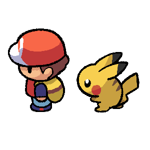

Simulación en Multisim
Programa utilizado para construir circuitos, simular su funcionamiento, probar valores matemáticos y realizar mediciones mediante instrumentos.
Programa utilizado para construir circuitos, simular su funcionamiento, probar valores matemáticos y realizar mediciones mediante instrumentos.
Multisim es un entorno interactivo que permite construir esquemas electrónicos y comprobar su comportamiento. Facilita la detección de errores en el diseño modificando componentes en tiempo real y observando los cambios reflejados instantáneamente en la instrumentación virtual antes de proceder al ensamble físico del circuito.
Para iniciar un proyecto desde cero en Multisim, debes dirigirte a la barra de menús superior (esquina superior izquierda).

Es indispensable guardar el progreso para evitar pérdidas de información.

A continuación se presentan las áreas fundamentales de la interfaz. Estas zonas centralizan todas las operaciones de diseño, simulación y medición de nuestro circuito. Se detallarán minuciosamente en las siguientes secciones.

Contiene la barra de Componentes de circuito, los botones para Ejecutar simulación, las herramientas de Medidas puntuales en la parte superior, el Área de trabajo central y la ventana inferior de Resultados de simulación.

Ubicada en el lateral derecho. Aloja equipos virtuales equivalentes a los de laboratorio físico: Multímetro, Generador de funciones, Osciloscopios (2 canales, 4 canales, Tektronix) y el Convertidor de lógica.

El Área de trabajo es la hoja cuadriculada central donde ubicamos físicamente todos los elementos del esquema.
¿Cómo conectar? Acercamos el cursor a la terminal (pin) de un componente. El puntero cambiará automáticamente a un indicador en forma de punto o cruz negra. Hacemos clic para iniciar el cable, trazamos la ruta, y damos un clic final sobre la terminal del componente destino para confirmar la conexión.
Al dar clic en el botón de componentes en la barra superior, se abre el buscador principal. A continuación, las familias elementales para un circuito DC y qué nos proporciona cada una.
Familias de Componentes Seleccionadas |
|
| Ventana de Selección | Ubicación y Función del Componente |

|
Fuente DC(Power Sources > DC_POWER). Nos da la energía principal en corriente directa para el circuito. La línea larga de su símbolo indica el polo positivo. |

|
Tierra (GND)(Power Sources > GROUND). Nos da el punto de referencia eléctrico. Indispensable; la simulación no corre sin un punto de referencia a 0V. |

|
Resistencias(Basic > Resistor). Nos da la oposición al flujo de corriente para proteger componentes (como el LED). Su valor se edita con doble clic. |

|
LED(Diodes > LEDs). Nos da un indicador visual en el circuito. Permite seleccionar colores específicos de un listado. |

|
Interruptor(Basic > Switch). Nos da control manual sobre la continuidad del circuito. Permite asignarle una letra del teclado (Ej. "A") para abrirlo/cerrarlo interactivamente. |

Al pulsar el botón del triángulo verde, el motor de Multisim arranca. Ejecutar una simulación nos ayuda a "dar vida" al esquemático, calculando flujos de corriente y caídas de voltaje en tiempo real. Nota: Para modificar componentes o eliminar cables, es obligatorio detener el proceso usando el botón rojo.
Herramientas de Medición Inmediata
| Lectura Activa | Función de la Herramienta |

|
Medida de Voltaje (V)Nos da el voltaje absoluto en un punto específico del cable, comparado contra la referencia general de Tierra (GND). |

|
Medida de Corriente (A)Al posarse sobre un alambre de conexión, nos da la lectura en Amperios (o mA) del flujo de corriente circulando a través de ese tramo específico. |

|
Medida de Potencia (W)Esta punta requiere colocarse estrictamente sobre el cuerpo del componente (no en el cable). Nos da la cantidad de energía en vatios que dicho componente está consumiendo o disipando. |

Nos sirve para medir parámetros fundamentales: Corriente (A), Voltaje (V) y Resistencia (Ohm). Su principal diferencia frente a las "medidas puntuales" es que el multímetro tiene dos terminales (positiva y negativa), permitiendo conectarlo en paralelo entre dos puntos exactos del circuito para medir caídas de tensión específicas (Ej. medir únicamente la pérdida a través de un LED).

Nos proporciona inyección de señales variables. Permite configurar:

Herramienta analítica de diseño digital. Consta de 8 pines de entrada y 1 de salida. Nos sirve para:
Instrumentos dedicados al análisis visual de señales eléctricas (voltaje vs tiempo).
| Aspecto del Instrumento | Uso Principal |

|
Osciloscopio (2 Canales)Permite observar hasta dos señales simultáneas. Cuenta con controles directos de Timebase (escala horizontal o tiempo por división) y escalas para el Canal A y Canal B (Voltaje por división). Ideal para analizar rápidamente la entrada contra la salida de un circuito. |

|
Osciloscopio (4 Canales)Utilizado para circuitos de complejidad media o sistemas trifásicos. A diferencia del anterior, agrupa sus diales, por lo que requiere seleccionar en el panel la letra correspondiente (A, B, C o D) antes de modificar su escala de Voltaje/División individual. |

|
Osciloscopio TektronixSimulador fotorrealista de un osciloscopio físico industrial. Nos sirve para familiarizarnos con el hardware del laboratorio real. Aporta el botón AUTOSET, que estabiliza matemáticamente la onda en la pantalla al instante, y el menú Measure para auto-calcular frecuencias en pantalla. |
